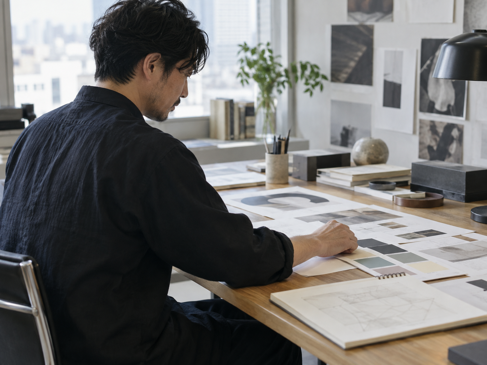

DESIGN REVIEW
デザインレビュー
制作途中のアイデアを持ち寄り、意図や伝わり方を一緒に考えます。完成前だからこそ話せることを大切に。
DESIGN COMMUNITY
ひとりのアイデアを、みんなの発見に。
ワンビーコミュニティは、デザインに向き合う人が、学びを共有し、試作を見せ合い、次の一歩を見つける場所です。
DESIGN / LEARN / CONNECT

つくって終わりにせず、誰かに見せ、問いを交わし、もう一度つくる。ワンビーコミュニティは、そんな過程そのものを大切にするデザインコミュニティです。
経験や肩書きよりも、好奇心と実践を。異なる視点に出会うことで、ひとりでは見えなかった可能性を見つけていきます。
Different eyes.
Better ideas.
自分のペースで関わりながら、日々の制作に生かせる視点を増やしていきます。
制作途中のアイデアを持ち寄り、意図や伝わり方を一緒に考えます。完成前だからこそ話せることを大切に。
デザインの考え方や実務の工夫を共有。知識を覚えるだけでなく、自分の仕事にどう使うかまで考えます。
悩みも発見も、肩の力を抜いて話せる時間。分野の違うメンバーとの会話から、新しい選択肢が生まれます。

見せ合うことから、
次のアイデアが始まる。

※ デモ用の生成イメージ。マスヤ本人の写真ではありません。はじめまして、マスヤです。
デザインには、正解をすぐに決められない時間があります。そんなとき、自分の考えを言葉にし、違う視点を受け取れる場所があれば、次の一歩が見つかるかもしれません。
ワンビーコミュニティでは、うまくできた結果だけでなく、考えた過程や迷いも持ち寄れる場をつくりたいと思っています。つくる人同士が、お互いの可能性を広げていける場所へ。
デザインを学びたい人も、実務で試行錯誤している人も。まずは、ここでどんな対話が生まれるかを想像してみてください。
コミュニティの詳細は、公開に向けて順次ご案内します。
経験年数を問わず、デザインに関心があり、学びや対話を楽しみたい方を想定しています。
デザインレビュー、学びのセッション、参加者同士の対話を中心に考えています。正式な内容は公開時にご案内します。
このページはデモサイトです。参加費、開催日程、申込方法は未設定です。